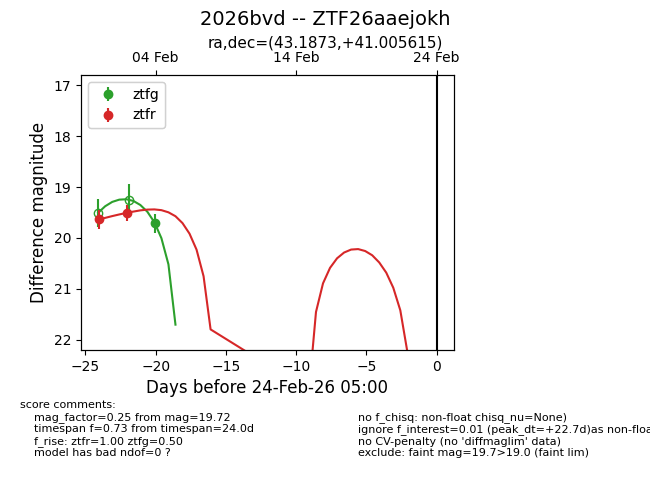
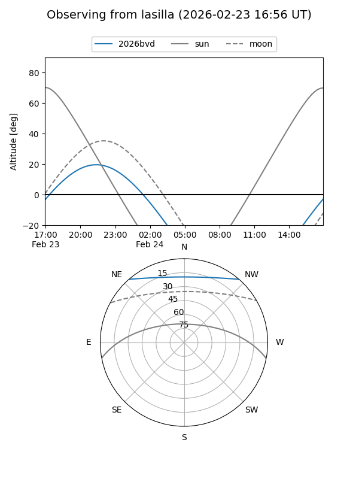
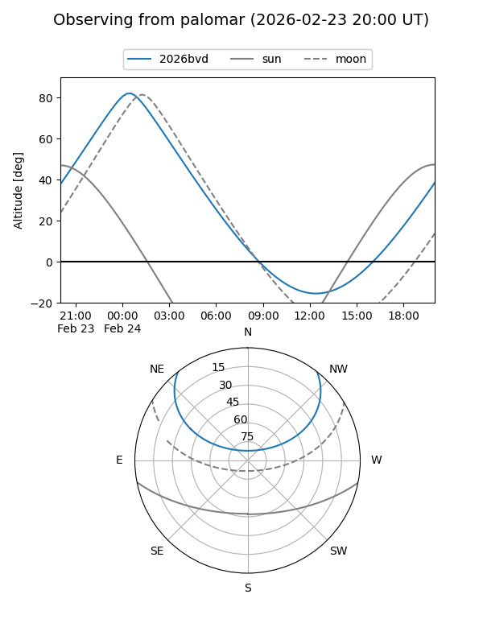

2026bvd
Target 2026bvd at 2026-02-24 09:08
Aliases and brokers:
FINK: link
Lasair: link
ALeRCE: link
TNS: link
YSE: link
alt names
ZTF26aaejokh (ztf,fink_ztf)
2026bvd (tns,yse)
Coordinates:
equatorial (ra, dec) = 43.1873,+41.00561
equatorial (HMS+DMS) = 02:52:44.96,+41:00:20.21
galactic (l, b) = (146.3225,-16.29169)
Flags:
Photometry:
last ztfg=19.72, ztfr=19.51
1 ztfg, 2 ztfr detections
Lightcurve

Visibility


Additional plots